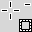
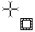
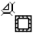
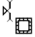

| 2.2. Rectangle Selection | ||
|---|---|---|

|
2. തിരഞ്ഞെടുക്കൽ ഉപകരണങ്ങൾ |  |
| 2.2. Rectangle Selection | ||
|---|---|---|
|
|
2. തിരഞ്ഞെടുക്കൽ ഉപകരണങ്ങൾ | |
ചതുരം തിരഞ്ഞെടുക്കൽ പ്രയോഗം സജീവ പാളി ദീർഘചതുരാകൃതിയിൽ പ്രദേശങ്ങളും തിരഞ്ഞെടുക്കുക രൂപകല്പന അതു നിരക്കു പ്രയോഗങ്ങളുടെ ഏറ്റവും അടിസ്ഥാന ആണ്, പക്ഷേ വളരെ സാധാരണയായി ഉപയോഗിക്കുന്ന. തിരഞ്ഞെടുക്കലുകൾ വിവരങ്ങൾക്ക് അവർ എങ്ങനെ ജിമ് Selections കാണാൻ ഉപയോഗിക്കുന്നു; എല്ലാ നിരക്കു ഉപകരണങ്ങൾ പൊതുവായുള്ള സവിശേഷതകൾ വിവരങ്ങൾക്ക് Selection Tools കാണുന്നു.
ഈ ഉപകരണം പുറമേ ഒരു ഇമേജിൽ ഒരു ദീർഘചതുരം തർജ്ജമ ഉപയോഗിക്കുന്നു. ഒരു നിറഞ്ഞു ദീർഘചതുരം റെൻഡർ ചതുരാകൃതിയിലുള്ള നിര സൃഷ്ടിക്കുക, തുടർന്ന് Bucket Fill tool ഉപയോഗിച്ച് ഫിൽ ചെയ്യുക. ചതുരാകൃതിയിലുള്ള ഔട്ട്ലൈൻ സൃഷ്ടിക്കുന്നതിന്, ലളിതവും ഏറ്റവും ഇഷ്ടാനുസരണം സമീപനം ചതുരാകൃതിയിലുള്ള നിര സൃഷ്ടിക്കുക എന്നതാണ് പിന്നെ അത് stroke.
You can access the Selection Tool in different ways:
from the image menu bar → → ,
by clicking on the tool icon
 in the ToolBox,
in the ToolBox,
by using the keyboard shortcut R.
![[കുറിപ്പു്]](images/note.png)
|
കുറിപ്പു് |
|---|---|
|
അതേ വഴിയിൽ ഈ എല്ലാ ഉപകരണങ്ങൾ ബാധിക്കുന്ന മോഡിഫയർ കീകൾ സഹായത്തിന് Selection Tools കാണുക. ഈ ഉപകരണം മാത്രമായുള്ള മാത്രം ഇഫക്റ്റുകൾ ഓപ്ഷനുകൾ വിശദമായി ഇവിടെ ചെയ്യുന്നു. |
നിങ്ങളുടെ നിരക്കു തുടങ്ങുന്ന, പൂർത്തിയാകുമ്പോൾ വരെ ഇത് താഴേയ്ക്കാക്കുമ്പോൾ ശേഷം Ctrl കീ അമർത്തുന്നത് ആരംഭ പോയിന്റിൽ പകരം ഒരു കോണിൽ തിരഞ്ഞെടുത്ത ദീർഘചതുരം കേന്ദ്രത്തിൽ, ഉപയോഗിക്കാൻ കാരണമാകുന്നു. നിങ്ങൾ തിരഞ്ഞെടുപ്പ് നടത്താൻ തുടങ്ങുന്ന Ctrl കീ before അമർത്തുക, ലഭിക്കുന്ന നിരക്കു നിലവിലുള്ള നിരക്കു നിന്ന് കുറയ്ക്കപ്പെടുന്ന ശ്രദ്ധിക്കുക. കഴ്സർ  മാറുന്നു
നിങ്ങൾ നിരക്കു തുടങ്ങുന്ന Shift കീ before അമർത്തുക, ലഭിക്കുന്ന നിരക്കു നിലവിലുള്ളതിൽ ചേർക്കും. കഴ്സർ  മാറുന്നു
മാറുന്നു
നിങ്ങളുടെ നിരക്കു തുടങ്ങുന്ന Shift കീ after അമർത്തുന്നത് Fixed ഓപ്ഷൻ ടോഗിൾചെയ്യുന്നു, പൂർത്തിയാകുമ്പോൾ വരെ ഇത് താഴേയ്ക്കാക്കുമ്പോൾ, ഇത് നിങ്ങളുടെ ആദ്യത്തെ നിരക്കു ആണെങ്കിൽ, ഒരു സ്ക്വയറിലേക്ക് നിരക്കു അതിടയാക്കും. പിന്നീട്, സ്ഥിര Aspect Ratio നിങ്ങളുടെ നിരക്കു മുൻ നിര വീക്ഷണാനുപാതത്തിൽ ബഹുമാനിക്കും.
നിങ്ങളുടെ നിരക്കു ആരംഭിച്ചതിന് ശേഷം ഇരുവരും കീകൾ അമർത്തിയാൽ ഒരു സ്ക്വയർ സെലക്ഷനും ആരംഭ പോയിന്റിൽ കേന്ദ്രമാക്കി നൽകുന്ന രണ്ടു ഇഫക്റ്റുകൾ കൂടിച്ചേർന്നുണ്ടായ. നിങ്ങളുടെ നിരക്കു ആരംഭിക്കുന്നതിന് മുമ്പ് ഈ അമർത്തുന്നത് അതിനനുസരിച്ച് നിലവിലുള്ള ഒന്ന് പോയിന്റർ മാറ്റം ആകൃതി ഫലമായുണ്ടാകുന്ന നിരക്കു വിഭജിക്കുന്ന ശ്രദ്ധിക്കുക: 
ഉടൻ അത് ചിത്രത്തിന്റെ മീതെ പോലെ : ഈ ഉപകരണം തെരഞ്ഞെടുക്കുമ്പോഴും മൌസ് പോയിന്റർ ഈ പോലെ പ്രദർശിപ്പിച്ചിരിക്കുന്നു. ഒരു ഇഴച്ചിടുക ചതുരാകൃതിയിലുള്ള (ചതുര) ആകാരം നേടുകയും അനുവദിക്കുന്നു. മൗസ് ബട്ടൺ വിശ്രമിക്കുന്ന, ഒരു അതിനെക്കുറിച്ച് (“marching ants”) നിരക്കു നൽകിയിട്ടുണ്ട്. അതു ശ്രദ്ധയോടെ നിരക്കു ക്രമീകരിക്കുന്നതിന് ആവശ്യമായ അല്ല; നിങ്ങൾ പിന്നീട് എളുപ്പത്തിൽ വലുപ്പം മാറ്റാൻ കഴിയും.
പോയിന്റർ കാൻവാസിൽ മാറുമ്പോൾ, പോയിന്റർ, നിരക്കു വശങ്ങൾ മാറ്റാൻ:
- നിരക്കു മുമ്പ് പോലെ കാണപ്പെടുന്നു പുറത്ത്; ഈ ഒരു പുതിയ നിര രൂപകൽപ്പന അനുവദിക്കുന്നു എന്നാൽ ഈ മുൻ ഖണ്ഡിക വിവരിച്ച പോലെ ചേർക്കാനോ കുറയ്ക്കേണ്ട മറ്റൊരു നിരക്കു പ്രസക്തമായ കീ നടപടി കൂടിച്ചേർന്ന് പക്ഷം നിലവിലുള്ള ഒന്ന് മായ്ക്കും.
- ചതുരാകൃതിയിലുള്ള സെൻസിറ്റീവ് വ്യക്തമായി അടയാളപ്പെടുത്തിയിട്ടുള്ള പ്രദേശങ്ങൾ overflying സമയത്ത് വിവിധ ആകൃതികളിൽ നിരക്കു പെരിഫറൽ ഭാഗങ്ങൾ, മൌസ് പോയിന്റർ മാറ്റങ്ങൾ ഉള്ളിൽ. ഈ handles നിങ്ങൾ നിരക്കു വലുപ്പം അനുവദിക്കുക. സന്ദർഭ തക്കവണ്ണം നിരക്കു കോണിലും പോയിന്റർ മാറ്റങ്ങൾ ഒരു ആകൃതിയിൽ ൽ; ഉദാഹരണത്തിന് കുറഞ്ഞ വലത് കോണിലുള്ള അതു മാറുന്നു: . അതുകൊണ്ട് ക്ലിക്കിൽ-ആൻഡ്-വലിച്ചോ ഈ മേഖലകളിലെ, നിങ്ങൾ മഹത്വപ്പെടുത്തുകയും വ്യാപ്തിയിൽ കഴിയും നിരക്കു വലുപ്പം. മീഡിയൻ നിരക്കു ഭാഗങ്ങൾ, ലാറ്ററൽ കുറഞ്ഞ അല്ലെങ്കിൽ കയറി, പോയിന്റർ സന്ദർഭ തക്കവണ്ണം ഉചിതമായ ആകൃതികളിൽ മാറുന്നു. : ഉദാഹരണത്തിന്, മൌസ് പോയിന്റർ ഷേപ്പിലുള്ള വലതുവശത്തെ കഴിയുമ്പോൾ പോയിന്റർ പോലെ കാണപ്പെടുന്നു. അതിനാൽ നിങ്ങൾ ക്ലിക്ക്-പരേതരായ കഴിയും വലിയവനാക്കുവാൻ അല്ലെങ്കിൽ തിരഞ്ഞെടുത്ത അതിർത്തി നീക്കി നിരക്കു വ്യാപ്തി വലിച്ചു.
- നിരക്കു Central പ്രദേശത്തെ അകത്ത് മൌസ് പോയിന്റർ ഒബ്ജക്റ്റ് കൃത്രിമത്വം, അതായത് .:  സാധാരണ പോലെ കാണപ്പെടുന്നു. അതിനാൽ നിങ്ങൾ ഒരു click- ആൻഡ്-വലിച്ചു മുഴുവനും നിരക്കു നീക്കാൻ കഴിയൂ.
സാധാരണ പോലെ കാണപ്പെടുന്നു. അതിനാൽ നിങ്ങൾ ഒരു click- ആൻഡ്-വലിച്ചു മുഴുവനും നിരക്കു നീക്കാൻ കഴിയൂ.
മാത്രമല്ല, നിങ്ങൾ Highlight ഓപ്ഷൻ തന്നിഷ്ടങ്ങൾക്കനുസരിച്ച് ഇല്ല എങ്കിൽ നിങ്ങളുടെ ജോലി ലളിതവും എന്താണ് നിരക്കു പുറത്തിറങ്ങി നിരക്കു ഉള്ളതു അധികം ഇരുട്ടിലും കാരണം ആയിരിക്കും, തുടർന്ന് നിരക്കു പ്രമുഖമാക്കിയ തോന്നുന്നു.
![[സൂചന]](images/tip.png)
|
സൂചന |
|---|---|
|
ബീഡി കീകൾ ഉപയോഗിക്കുക എങ്കിൽ നിരക്കു നീക്കുകയോ ഒരു പിക്സൽ പടിപടിയായി അതിന്റെ വലുപ്പം പരിഷ്കരിക്കുക കഴിയും. നിങ്ങൾ Shift സംയുക്തമായും ഉപയോഗിക്കുകയാണെങ്കിൽ നിങ്ങൾ ഒരു 25 പിക്സൽ പടിപടിയായി നീക്കാനാകും. |
ചിത്രം 14.12. Sensitive selection areas
നിരക്കു പ്രദേശം ബന്ധപ്പെട്ട് അവരുടെ പ്രാദേശികവത്കരണ എന്ന ചടങ്ങിൽ എല്ലാ പോയിന്ററുകളിലെപ്പോലെ പ്രദർശിപ്പിക്കുക.
നിരക്കു സൃഷ്ടിക്കുന്നത് പരിഷ്ക്കരിക്കുന്നതും ശേഷം, ഈ മോഡില് നിന്നും പുറത്ത് (ഏതെങ്കിലും മാറ്റങ്ങൾ നടപ്പിലാക്കി) വരും. നിങ്ങൾ നിരക്കു അകത്തോ Enter കീ അമർത്തിയാൽ ഒറ്റ ക്ലിക്കിൽ ചെയ്യാൻ കഴിയും. അല്ലെങ്കിൽ നിങ്ങൾക്ക് വെറും ഒരു നോൺ-നിരക്കു ടൂൾ ഉപയോഗിക്കാൻ കഴിയും ഉദാഹരണത്തിന്, പൂരിപ്പിക്കുക അല്ലെങ്കിൽ നിരക്കു വരയ്ക്കാൻ.
സാധാരണ, ഉപകരണം ഓപ്ഷനുകൾ ഉടൻ ഒരു ഉപകരണം സജീവമാക്കാൻ പോലെ പണിസഞ്ചി കീഴിൽ ഘടിപ്പിച്ചിട്ടുള്ള ഒരു ജാലകം പ്രദർശിപ്പിക്കും. അഥവാ അങ്ങനെയല്ലെങ്കിൽ, നിങ്ങൾ തിരഞ്ഞെടുത്ത ഉപകരണം ഓപ്ഷൻ വിൻഡോ തുറക്കുന്ന → → വഴി ഇമേജ് ബാറില് നിന്നും ആക്സസ് ചെയ്യാൻ കഴിയും.
|
|
കുറിപ്പു് |
|---|---|
|
ഈ എല്ലാ ഉപകരണങ്ങൾ സാധാരണമാണ് ഉപാധികൾക്ക് സഹായത്തിന് Selection Tools കാണുക. ഈ ഉപകരണം മാത്രമായുള്ള ഓപ്ഷനുകൾ മാത്രം ഇവിടെ വിശദീകരിച്ചു ചെയ്യുന്നു. |
Common select options.
നിങ്ങൾ ഈ ഐച്ഛികം ചെക്ക് ചെയ്താല് ഒരു സ്ലൈഡർ ലഭ്യമാകുന്നു. നിങ്ങൾ നിരക്കു മൂലകൾ റൗണ്ട് ഉപയോഗിച്ച ആരം ക്രമീകരിക്കാൻ ഇത് ഉപയോഗിക്കാം.
നിങ്ങൾ ഈ ഓപ്ഷൻ പ്രാപ്തമാക്കുകയാണെങ്കിൽ, നിരക്കു മൌസ് ബട്ടൺ അമർത്തി തുടങ്ങിയതാണെങ്കിലും പോയിന്റ് തിരഞ്ഞെടുത്ത പ്രദേശത്ത് കേന്ദ്രത്തിൽ ഉപയോഗിക്കുന്നു.
ഈ മെനു വ്യത്യസ്ത വഴികളിൽ ദീർഘചതുരം ആകൃതി നിർബന്ധിക്കയും ഓപ്ഷൻ അനുവദിക്കുന്നു.
ഈ ഐച്ഛികം വീക്ഷണ അനുപാതം സ്ഥിര പ്രസക്തമായ ബോക്സ് എഴുതിയ നിലനിർത്തിക്കൊണ്ടുതന്നെ രൂപകൽപ്പനയും വലുപ്പം നിരക്കു അനുവദിക്കുന്നു. സ്വതവേ അനുപാതം 1: 1 (അങ്ങനെ ഞങ്ങൾ ഒരു സ്ക്വയർ ഉണ്ടായിരിക്കും) എന്നാൽ അത് മാറ്റാൻ കഴിയും. രണ്ടു ചെറിയ ലാൻഡ്സ്കേപ്പ് ചിത്രവും ഐക്കണുകൾ ഉപയോഗിച്ച്, ഈ അനുപാതം വിപരീത കഴിയും.
With this choice you can fix the width of the selection.
With this choice you can fix the height of the selection.
ഈ ചോയ്സ് ഉപയോഗിച്ച് നിരക്കു വീതി ഉയരവും പരിഹരിക്കാൻ കഴിയും.
ഈ രണ്ടു വാചക ഫീൽഡുകളുടെ നിരക്കു മുകളിലെ ഇടത് കോണിൽ നിലവിലുള്ള തിരശ്ചീന, ലംബ നിർദ്ദേശാങ്കങ്ങൾ അടങ്ങിയിട്ടുണ്ട്. നിങ്ങൾ കൃത്യമായി നിരക്കു സ്ഥാനം ക്രമീകരിക്കുക ഈ ഫീൽഡുകൾ ഉപയോഗിക്കാം.
ഈ രണ്ടു വാചക ഫീൽഡുകളുടെ നിരക്കു നിലവിലെ വീതി ഉയരവും അടങ്ങിയിട്ടുണ്ട്. നിങ്ങൾ കൃത്യമായി നിരക്കു വലിപ്പം ക്രമീകരിക്കാൻ ഈ ഫീൽഡുകൾ ഉപയോഗിക്കാം.
നിങ്ങൾ ഈ ഓപ്ഷൻ പ്രാപ്തമാക്കുകയാണെങ്കിൽ, തിരഞ്ഞെടുത്ത പ്രദേശത്ത് വിഷ്വൽ നിരക്കു വളരെ എളുപ്പത്തിലാക്കുന്നതിനായി ചുറ്റുമുള്ള മാസ്ക് വഴി ഊന്നിപ്പറയുന്നുണ്ട്.
ഈ മെനു ഉപയോഗിച്ച് നിങ്ങൾക്ക് Photo composition rules മാനിച്ചും, ഒരു നിരക്കു സൃഷ്ടിക്ക് എളുപ്പമാക്കുന്നതിന് സെലക്ഷനിൽ ദൃശ്യമാകുന്ന ഗൈഡിന്റെ തരം തിരഞ്ഞെടുക്കാം.
ആറു ഓപ്ഷനുകളും ലഭ്യമാണ്: PLACEHOLDER,-105643
Auto Shrink Selection ചെക്ക്-ബോക്സ് നിങ്ങളുടെ അടുത്ത നിരക്കു സ്വയം ഇമേജ് പാളി ഏറ്റവുമടുത്ത ചതുരാകൃതിയിലുള്ള ലഭ്യമായ രൂപത്തിൽ അകലുകയും ആക്കും. ചുരുക്കുക മികച്ച ദീർഘചതുരം കണ്ടെത്തുന്നതിനായി അൽഗോരിതം “intelligent”, ഈ കേസിൽ മാർഗങ്ങൾ ചിലപ്പോൾ അത്ഭുതകരവും ഡ്രീംലൈനറിന്റെ കാര്യങ്ങൾ ചെയ്യുന്ന, ചിലപ്പോൾ അത്ഭുതമെന്നു അപൂർവ്വ കാര്യങ്ങളെ ചെയ്യുന്നവൻ ആണ്. ഏതെങ്കിലും സാഹചര്യത്തിൽ, നിങ്ങൾ തിരഞ്ഞെടുക്കാൻ ആഗ്രഹിക്കുന്ന മേഖലയിൽ ഒരു സോളിഡ്-നിറമുള്ള സറൗണ്ട് ഉണ്ട്, യാന്ത്രിക ചുരുക്കുന്നത് എല്ലായ്പ്പോഴും ഇത് ശരിയായി എടുക്കുന്നതാണ്. തത്ഫലമായുണ്ടാകുന്ന നിരക്കു നീ പുറത്തു തൂത്തുവാരും അതേ ആകാരം ഞങ്ങൾക്കുണ്ട് ആവശ്യമില്ല ശ്രദ്ധിക്കുക.
If Sample Merged is also enabled, then Auto Shrink will use the pixel information from the visible display of the image, rather than just from the active layer. For further information regarding Sample Merge, see the glossary entry Sample Merge.